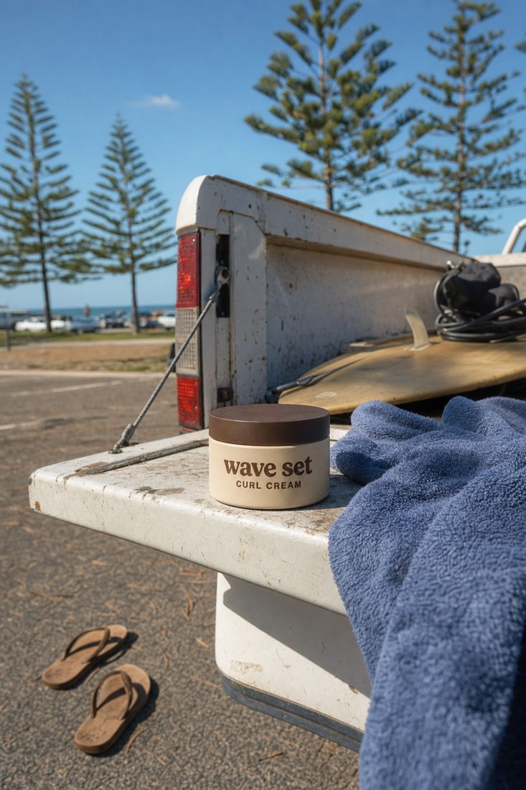
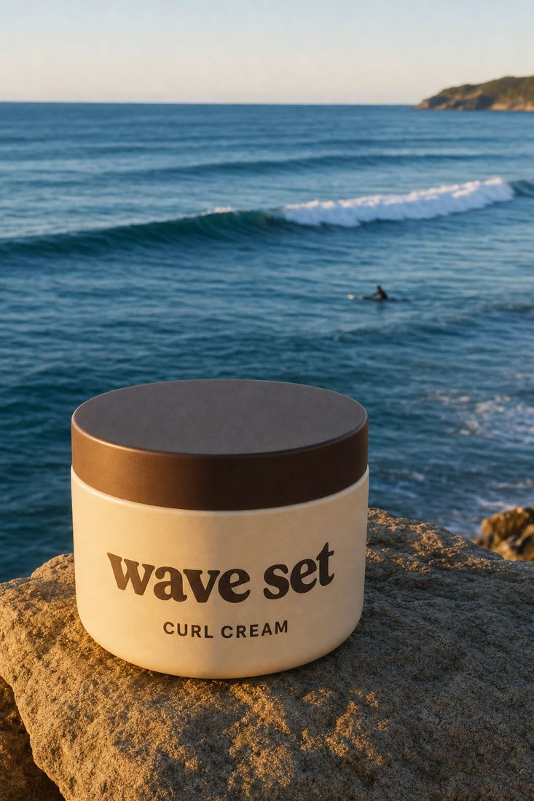
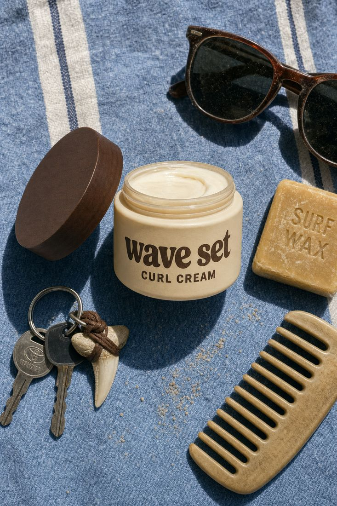

1. The idea
Don't brush it. Set it.
Curl cream has been solved. It works, and plenty of them work. What nobody has built is how it feels: the twenty minutes after a surf when your hair's wet, the sun's on your back and you've got nowhere to be. Wave Set sells that moment, and the cream comes with it.
That fits your own brief: "not reinventing the wheel, just the aesthetic around it and the feeling."
2. The name
Wave is the ocean and the wave in your hair. Set is what curls do when you leave them alone, and surf breaks come in sets too. So one name carries three jokes, and all of them are about the beach.
Heads up: "wave set" is also an old dictionary term for hair-setting lotion. On its own it's probably too descriptive to trademark for hair products. The fix is simple: keep Wave Set as the product and put a distinctive house name or logo above it. The options are in the launch playbook.
3. Colour: how we read your brief
Your brief: the socials are "all blues, beaches", and the product itself is "cream and brown, something that stands out against that blue", so a post-surf photo of the jar doesn't blend into the background. We took that literally: the world is blue, and the jar is the only warm thing in it.
(Your brief also says "the actual product itself is going to be blue", but the next sentences make it clear you meant cream and brown. If you did want a blue product, tell us. It changes a lot.)
#CFE3EA
#6F9FB8
#1D4A63
#0F2F42
#F3EBDD
#5A3E2B
#2B2118
- The 70 / 20 / 10 rule: 70% blues, 20% cream, 10% brown in any post or page.
- Faded, never neon. Think of a towel that's been in the sun all summer. Aussie surf labels like Rhythm and Banks Journal use the same washed palette.
- No green, black or pink. Those are the competitors' colours (Wavy is sage, BASED is black, Mermade is pink).

4. Type
wave set is set in Fraunces, a soft, chunky serif that looks like a 70s surf-shop sign. It's always lowercase, like it was painted by hand.
CURL CREAM is set in Inter Tight caps. It's plain on purpose, so anyone can read what's in the jar from across the shop.
Two fonts, no more. Headlines go in Fraunces and everything else in Inter Tight.
5. The jar

- Squat and matte, with a cream body and a chunky brown lid. It feels good in your hand and looks good on a towel.
- The front has two lines: the wordmark, then CURL CREAM. No claims, no science and no "for all curl types" charts.
- The back has the three steps (Wet. Scoop. Leave it.), the full ingredient list (required by law) and one line: "Made on the Gold Coast by a bloke with ridiculous hair."
- Version 1 might be a bottle. The quickest Queensland supplier sells its curl cream in a bottle. The jar is the goal. See Start today.
6. Photos and video


- Real places: Point Lookout, Burleigh, the carpark, the outdoor shower, the ute. No studio white.
- Something blue is always in frame: sky, water or a faded towel. The jar is always the warm thing in it.
- People are you, or someone seen from behind. No stock models.
- Film grain, natural light, and a slightly faded look. The TikTok edits add a light blue grade.
- Captions go in cream pills with a brown shadow (see the TikTok pack). Always lowercase.
7. The voice
This is your TikTok voice, pointed at a product: deadpan, short, a bit self-roasting, and never trying too hard.
| Say this | Never this |
|---|---|
| Don't brush it. Set it. | Unlock your best curls |
| It says curl cream. It's curl cream. | Advanced curl-defining formula |
| The twenty minutes after a surf. | Elevate your routine |
| Made by a bloke with ridiculous hair. | Crafted for the modern man |
| Humid? Scoop. Windy? Scoop. | Clinically proven frizz control |
| Wet. Scoop. Leave it. | Apply a generous amount to damp hair, distributing evenly |
Legal note: stick to appearance claims ("defines", "holds", "less frizz"). Never say treats, repairs, protects or SPF. Those make it a therapeutic good in Australia.
8. Where it sits
Our read, based on the competitor research (Sep 2026). Uppercut is barbershop heritage, not science, so it sits near the middle.